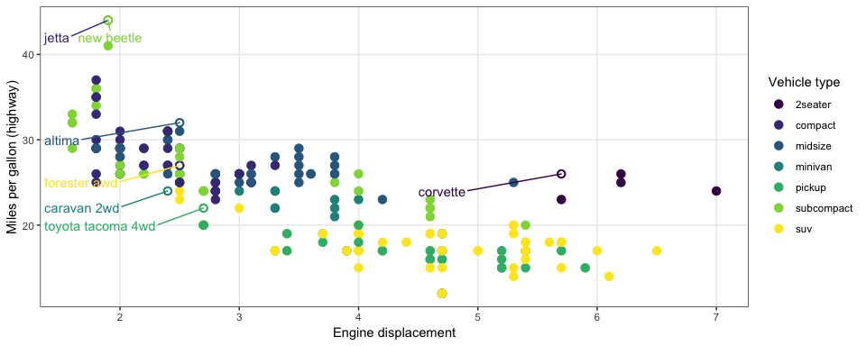

Write this chunk of code out in an English sentence to your grandma.
If there is a data format that exists and is used, then there is a way to import that data into R. We will learn how to handle the basic tabular formats. The packages library(readr), library(readxls), and library(haven) will provide most of the functionality we need.
.csv.html.txt.R.xlsx.Rmd.docread.csv() and read_csv()README.md in your repository about the benefits.README.md for me to read in class.parse_ commandsUse this code - money <- c("4,554,25", "$45", "8025.33cents", "288f45")
as.numeric(money) and talk with your table about the output.parse_number(money) and compare the results.read_csv() with parsersproblems(challenge)), the head(), and tail() of your challenge object. What formats should they be?Here are a few questions. Discuss each one with your table and decide which file type to use - .md, .r or .rmd. Then discuss the reasons for that decision.
Each of the aesthetics has a paired scale function - x, y, size, color, fill, linetype, shape, alpha. All of the scales start with scale_ and then the respective aesthetic. All the aesthetic scales have an _continuous, _discrete, and _manual.
scale_x_ & scale_y_ are the two scales I most often usescale_fill_ & scale_color_ are the next most often used.
The library(ggrepel) package is a must for our work. library(directlabels) can also be helpful. Here is the book’s graphic.
Here is the book’s graphic.
Use the code from 28.3 and update their graphic to match mine.

Data can get complicated very fast. How do we provide depth of variability understanding without overwhelming the visualization user?
Another package that makes flipping the axes easier in ggplot – rotating axes
{kind=link}